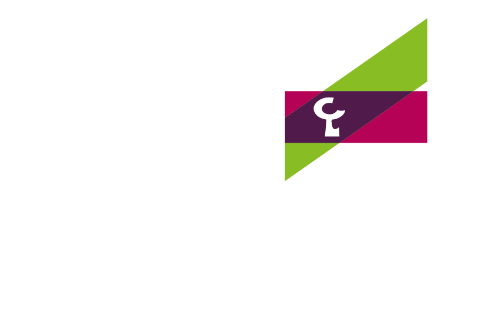
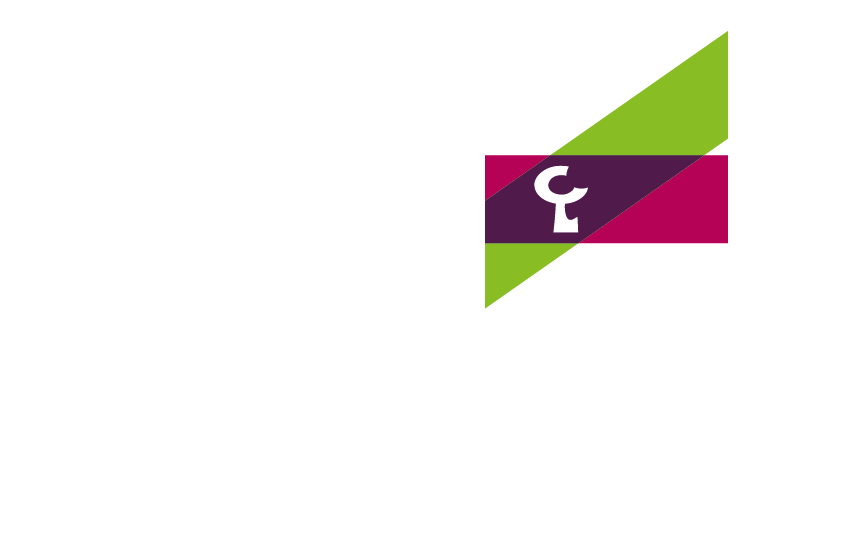

VII Congreso de Jóvenes Investigadores de la RSME
Bilbao,
13-17/enero/2025
El Congreso de Jóvenes Investigadores de la Real Sociedad Matemática Española (RSME) es un congreso bienal de la RSME donde investigadores jóvenes de todo el mundo con vinculación a la comunidad matemática española se encuentra para compartir sus últimos resultados de investigación, pero sobretodo para crear nuevos lazos y seguir tejiendo redes de colaboración entre quienes formarán la futura comunidad matemática.
Tras sus seis ediciones previas en Soria (2011), Sevilla (2013), Murcia (2015), Valencia (2017), Castellón (2020) y León (2023), la séptima edición tendrá lugar en la villa de Bilbao del 13 al 17 de enero del 2025 siendo la Universidad del País Vasco/Euskal Herriko Univertsitatea (UPV/EHU) la institución anfitriona y organizadora y el Basque Center for Applied Mathematics (BCAM) co-organizador.


 
